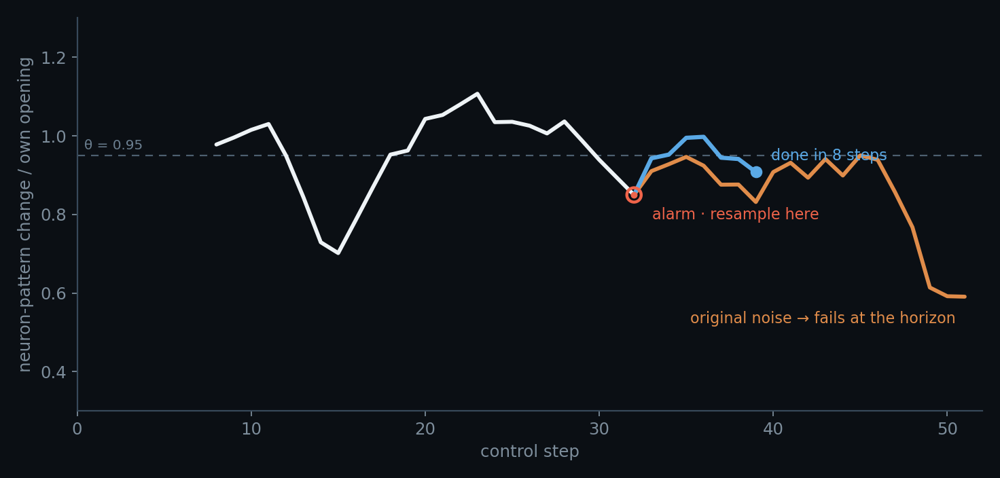
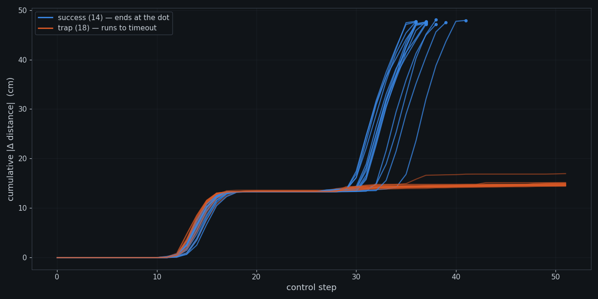
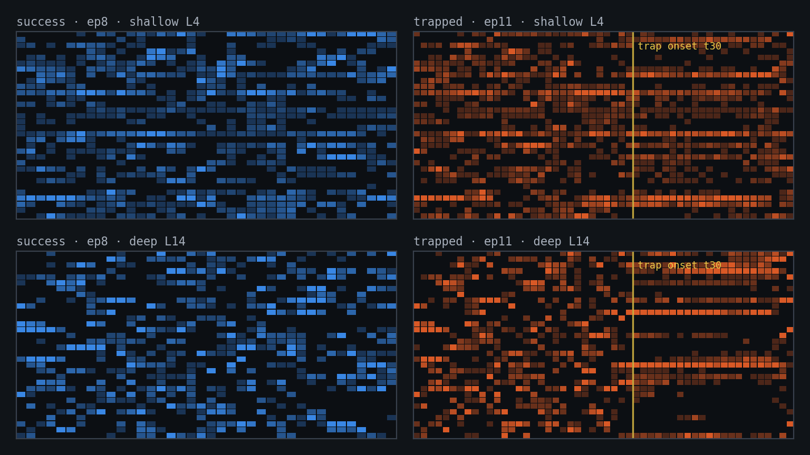
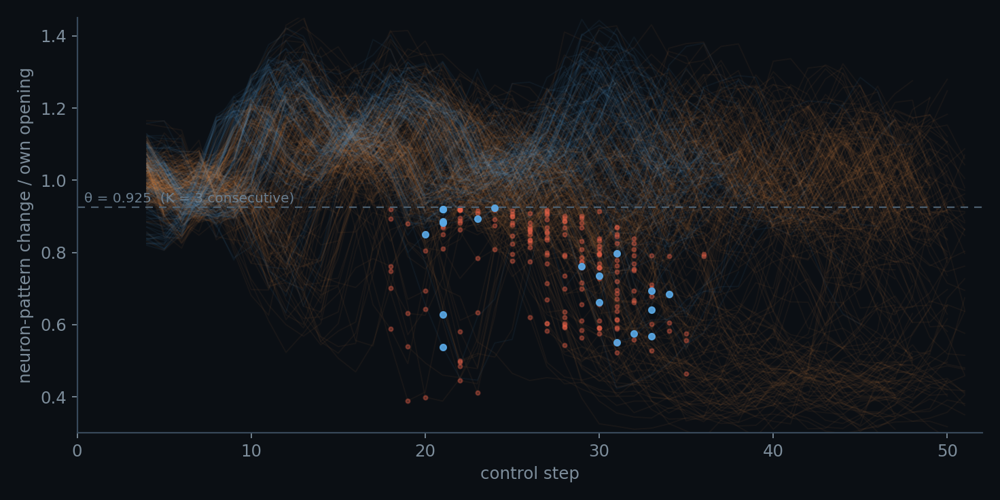
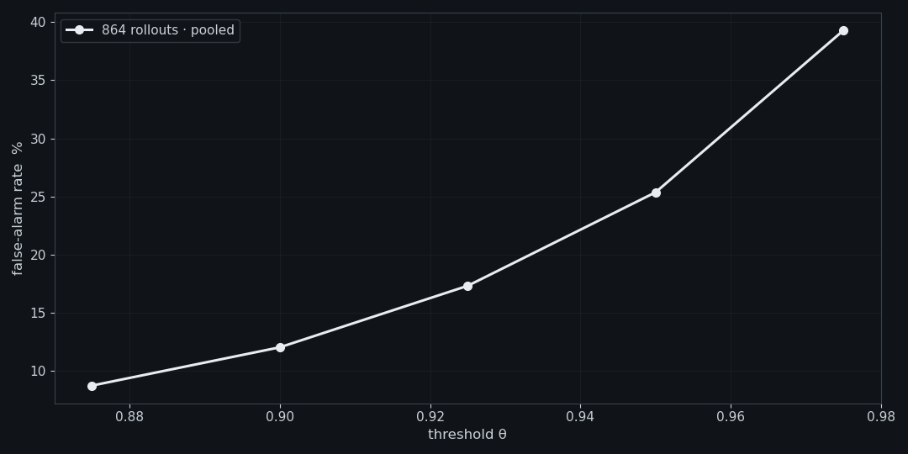

VLA 里的神经元,看见了 token 看不见的物理状态

这个故事要从另一类模型讲起。
过去我们在推理大模型上做过一件事,叫 NAD(Neuron Activation Distribution): 模型答题时,把几万个神经元的激活分布存下来 —— 不看它写了什么,只看这些内部状态。 结果是:同一道题采样出的一堆回答,光凭神经元的活动就能挑出更可能对的那条。 把握与犹豫没有写进 token,但内部状态里有。
当时留了一个问题:这是语言模型的特产,还是所有大模型的通性?
同一个思想换到具身智能的场景下:VLA 大模型的内部,会不会也有类似的信号呢? 我们找了一台会做饭的机器人。它的「话」不是文字,是每秒二十个关节动作; 它也会「想错」—— 不是答错题,而是手臂卡在半空, 或在两个壶之间来回打转,直到超时。下面两条 rollout,从逐位相同的模拟器状态出发, 模型也一样,唯一的差别是采样用的一条噪声流。左边 19 秒把两个壶都放上了灶台; 右边折腾满 26 秒,超时,失败。
分开这两条 rollout 的那件事,从头到尾没有出现在任何 token 里。动作序列照常输出, 轨迹照常延伸,每一帧看着都在「干活」。要在它们还在跑的时候分出谁会失败, 看输出是看不出来的。
一、物理世界里的 trap,长什么样
先把失败本身看清楚。从同一个初始状态采 32 条 rollout(还是只差噪声): 14 条成功、18 条陷入 trap,上限 52 步。
我们把这类失败统称 trap:rollout 还在跑,进度却已经死了。它主要有两副面孔 —— 一种是手臂悬在半空几乎一动不动,像被按了暂停,相邻观测帧逐帧相同; 另一种是手臂在两个壶之间来回穿梭,一次次回到同一个位置,路径走了很多,进度是零。 两者是同一件事的两种样子:困在 trap 里。


剩下的是各种「还在动、但把事做岔了」的杂类:壶拿起来又掉、放下去又挪走 (32 条轨迹与深层路由的逐帧对照)。
而站在 token 这一侧,有三条绕不过去的局限:
- 动作流不会告诉你。卡住的模型每一步照样输出一整块动作 —— 十个数、格式正确、 幅度正常。没有报错,没有沉默,失败以「完全正常的输出」的形式发生。
- 长度分不出两种解释。一条跑得久的轨迹,可能是问题难,也可能是已经卡死。 两种情况该做的事相反 —— 前者该等,后者该停 —— 但轨迹只显示同一个症状:长。
- 判决要等到终点。成功谓词在 episode 结束那一刻才盖章。等你「确认」失败, 26 秒已经花完了。
二、神经元早就知道了
这台 VLA 是 MoE 结构:在若干层里,各有一小组神经元充当调度员,每个控制步给 32 个专家打分,点亮得分最高的 4 个来处理这一步。哪 4 个亮着 —— 这份名单叫 pattern。
手臂在干活时,pattern 一步一换人;手臂一卡住,pattern 冻住了 —— 同样那 4 条通路,一亮亮到超时。trap 就这样写在神经元内部的信息里, 而动作流上什么都看不出来。
于是检测器可以笨到只有一句话:数 pattern 每步换了多少,除以这条 rollout
自己开头的换人速度,得到无量纲的比值 r(t);
连续三步跌破 θ = 0.95,报警。没有学习,没有标定,四个常数,全部提前冻结。

在这批语料上,这条规则判对 80.1%(全猜多数类是 66.8%);在另一批独立采集的 512 条上判对 82.0%(基线 57.8%)—— 用的是同一个阈值。因为比值除的是 rollout 自己的开头,θ 是个无量纲数:任取一个 θ,两批语料给出的误报率逐档只差 0–2 个点。

误报值得单说一句。203 次报警里 19 次落在最终成功的 rollout 上 —— 而这 19 条恰是 慢成功,长度中位 48 步(成功整体 39 步)。它们确实卡住过,只是自己走了出来。 所以警报的语义是「这条现在卡住了」,而不是「这条死定了」。这个区别马上就会兑现。
三、说老实话:它为什么灵
第一次看到深层 pattern 冻结时,它像魔法 —— 直到对照实验把话说得让人清醒:
机器人卡住 → 观测不变 → 路由器输入不变 → 专家当然不换。路由的粘滞与 输入自身的稳定度相关 r = +0.93;把输入回归掉,路由指标就塌回随机。
神经元不是先知。它是一枚免费的状态传感器:把「物理世界停住了」这件事, 忠实写进一份反正都要生成的日志。平凡,恰恰是它可靠的原因 —— 不依赖玄学, 就不会玄学地失效。而「免费」是字面意义的:专家选择是 MoE 前向传播的副产品, 读它不加一次推理、不加一个探针。
还有一个反直觉的细节:pattern 里具体是哪几个神经元,几乎不携带成败信息 —— 静态名单能以近乎 100% 的准确率认出「这是哪个初始场景」,对结局却几乎无用。 身份是场景的指纹,变化才是状态。上面的比值对专家重新编号完全不变, 拿的正是后者。
One more thinking:能不能在线救回来?
警报若只能记账,就是个没人看的仪表盘。所以最后一个实验把它当扳机: 一条新的 rollout 在线跑(阈值等常数全部事先冻结),第 32 步报警 —— 就在那一步,存下完整模拟器状态,换 8 条新噪声流分别续跑。
8 条重采样里 3 条成功。一条原本必败的 rollout,在警报指着的那一步换了条噪声, 8 步做完了任务。检测,第一次闭环成了干预。
边界同样是测出来的,一条不藏:
- 不是每个状态都救得回。另一个初始状态,同一套流程:0/8。警报读数分不出这两种。
- 时刻本身并不特殊。对照组在报警前随机挑一步分叉,同样 3/8。 警报的价值是「知道该出手了」,不是「挑中了最佳瞬间」。
- pattern 选不出该执行哪条。8 条候选里挑「路由变化最大」的失败了; 救回的恰是变化最小的一条(n = 1,方向与直觉相反)。
- 没有预警。警报中位落在全程 54% 处;在那之前,单步读数与掷硬币无异。 它读的是「已经卡了」,不预言「要出事」。

收尾
轨迹是模型做过的事,pattern 是它当时的状态。前者要等终点盖章,后者半路就把话说完了 —— 写在一份模型每步都在生成、却从没人读的日志里。仪表一直亮着,我们只是第一次看了它一眼。
50 秒动画版:pattern — 一部关于路由的短片 ·
trap 逐帧对照:路由冻结动画 ·
本文全部曲线为实测,数据与脚本见 analysis_online_2026-08-29/ 与
analysis_triggered_fork/ · English version